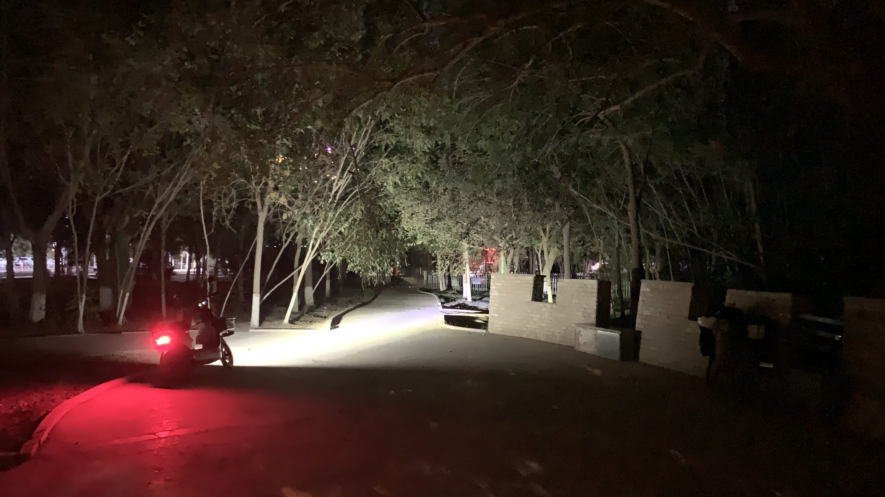

k-Day 181｜
進入一棟看來有些破舊的建築，裡面擠滿提著藍色扁形公事包的男性。輪到我交上護照和電子簽證，海關人員對著電腦螢幕皺眉，拿下牆上的一張表格，又對著螢幕皺眉，留下一句：「查不到你的紀錄。」就帶著護照和簽證頁離開。過了好一陣子，見他回到櫃檯並沒有說什麼，只是翻到蒙古延簽的那一頁，在下方蓋上紅色的吉爾吉斯入境章。
和柯族翻譯加了微信，他說在吉爾吉斯若遇上問題可以和他聯繫。

今日花費： 元
進入一棟看來有些破舊的建築，裡面擠滿提著藍色扁形公事包的男性。輪到我交上護照和電子簽證，海關人員對著電腦螢幕皺眉，拿下牆上的一張表格，又對著螢幕皺眉，留下一句：「查不到你的紀錄。」就帶著護照和簽證頁離開。過了好一陣子，見他回到櫃檯並沒有說什麼，只是翻到蒙古延簽的那一頁，在下方蓋上紅色的吉爾吉斯入境章。
和柯族翻譯加了微信，他說在吉爾吉斯若遇上問題可以和他聯繫。

今日花費： 元